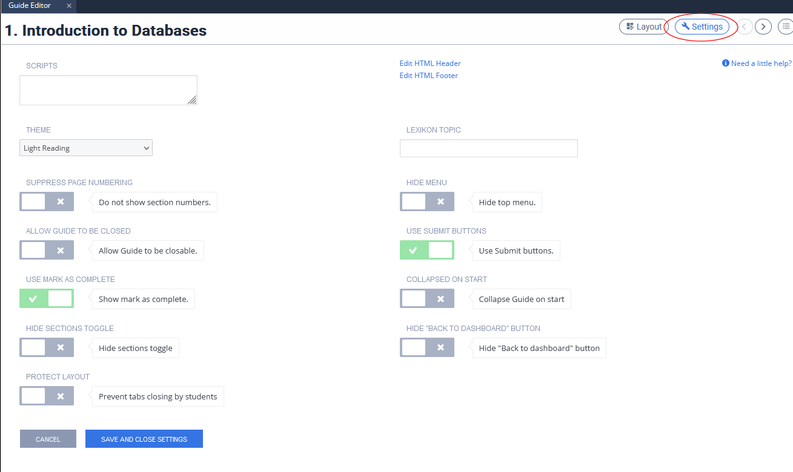

Student submission options¶
There are two important settings that control
the way a student submits individual questions
the way a student notifies the course instructors that an assignment is completed.
The submit button¶
By default each assessment has a submit button beneath the assessment. Once pressed, the answer is autograded.
Each assessment type allows you to define the number of attempts students can make. On the last allowed attempt, the student will be warned that they will not be able to resubmit after that attempt.
You can suppress the use of submit buttons for Advanced Code Test, Standard Code Test, MCQ, Fill in the Blank, Free Text and Free Text Autograde assessments. You cannot suppress the submit buttons for Parsons Puzzle assessments.
This feature is handy for exams, students do not need to worry about the effect of pressing the button. They can provide a response and move on to other assessments or pages in the guide.
To suppress the use of the Submit button, go to the settings button in the guide and disable Use submit buttons.

Once the project is marked as complete (see below) all assessment responses are submitted automatically. All students work must be marked as complete either manually or using the automated Mark as Complete option on the final deadline.
Mark as Complete¶
To suppress the student Mark as complete action, go to the guide settings (see above screenshot) and disable Use mark as complete.
A student can proactively mark an assignment as complete. This can trigger an assignment level autograde script and it is also displayed in the teacher dashboard for that student.
The drawback of using the student driven mark as complete option is that once students mark an assignment as complete, they are no longer able to make changes to the assignment, including answering assessments. The advantage is that instructors are able to grade those students’ work ahead of a deadline.
If the project has been marked as completed, students can click on the ‘graded’ button to access grade feedback. If they wish to view the project, they can click on the name of the project on the left hand side. As the assignment is completed they will not be able to edit anything but can still view the content.
You can disable your students’ ability to Mark as Complete entirely and eliminate instances of prematurely marking as complete or forgetting to do so. This means students won’t need to request that their assignment be re-enabled if they submitted by mistake or decide they want to change something after marking as complete.
If you choose to disable your students’ ability to mark as complete, you can use one of the following methods to mark assignments as complete:
Once the assignment deadline has been reached and you want to start grading student work, mark all students’ work as complete from the assignment actions area.
Set an end of assignment date and specify that once the date is reached, the students’ work should be Marked as Complete automatically.
Penalty deadlines¶
Another related feature is Penalty deadlines which allow you to specify deadlines, before the final grading deadline, where a percentage deduction of the final grade is made. Click here for more information on managing penalty deadlines.